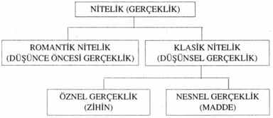

Buna karşılık Phaedrus’un onlara verdiği de metafizik bir hiyerarşiydi ve şöyleydi:

Onun öğrettiği Nitelik, gerçekliğin bir parçası değildi, tümüydü. Daha sonra üçlüye dayanarak, “Neden herkes Niteliği farklı görüyor?” sorusunu yanıtlamaya girişti. Bu, önceleri hep kaçamak yanıtladığı bir soruydu. Şimdi diyordu ki “Niteliğin biçimi, formu yoktur, tanımlanamaz. Biçimleri ve formları görmek onları düşünselleştirmektir. Nitelik her türlü biçim ve formdan bağımsızdır. Niteliğe verdiğimiz isimler, biçimler ve formlar Niteliğe sadece kısmen bağlıdır; kısmen de, bellediğimizde biriktirdiğimiz önsel imgelere bağlıdır. Biz Nitelik olayında, sürekli olarak, daha önceki deneyimlerimizin benzerini bulmaya çalışırız. Eğer bulamazsak bir şey yapamayız. Dilimizi bu benzerliklere dayanarak oluştururuz. Tüm kültürümüzü bu benzerliklere dayanarak oluştururuz.”
İnsanların Niteliği farklı görmelerinin nedeni, diyordu Phaedrus, ona farklı benzerlik dizileriyle yaklaşmalarıdır. Buna dilden örnekler verdi; Hint harfleri olan da, da ve dha bize aynı gibi gelir, çünkü bizde, onların arasındaki farkı hissettirecek benzerleri yoktur. Aynı şekilde, Hintçe konuşanların çoğu da ile the’yı ayırt edemez, çünkü böyle bir duyarlık kazanmamışlardır. Hintli köylülerin hayalet görmeleri hiç de seyrek rastlanan bir şey değildir, dedi Phaedrus. Ama yerçekimi yasasını görmekte çok zorlanırlar.
Bu, dedi, bir sınıf dolusu birinci sınıf öğrencisinin kompozisyonda neden genellikle aynı şeyleri beğendiklerini açıklar. Bunların hepsi görece benzer kültür birikimine ve benzer bilgilere sahiptirler. Ama bir grup yabancı öğrenci gelse ya da örneğin sınıftakilerin deneyimlerinin dışında kalan bir ortaçağ şiiri konu edilse, o zaman öğrencilerin Niteliği sıraya koyma yetenekleri büyük olasılıkla, birbirine pek benzer olmayacaktır.
Yani, dedi, öğrenciyi tanımlayan şey onun Nitelik tercihidir. İnsanların Nitelik hakkındaki farklı düşünceleri Niteliğin farklı olmasından değil, insanların deneyim bakımından farklı olmalarından kaynaklanır. Phaedrus, aynı önsel benzerliklere sahip iki kişinin Niteliği her zaman aynı şekilde göreceklerini düşünüyordu. Gerçi bunu sınamanın bir yolu yoktu, o nedenle tüm bunlar spekülasyondan ibaret kalıyordu.
Okuldaki çalışma arkadaşlarına yanıt olarak şöyle yazmıştı:
“Niteliğin felsefi bir açıklaması, felsefi bir açıklama olduğundan, hem yanlış hem de doğru olacaktır. Felsefi açıklama işlemi analitik bir işlemdir, bir şeyi öznelere ve yüklemlere ayırma işlemidir. Benim (ve diğer herkesin) nitelik sözcüğü ile kastettiği şey, öznelere ve yüklemlere ayrılamaz. Bu, Niteliğin çok gizemli olmasından değil, yalın, dolayımsız ve doğrudan olmasındandır.
“Saf Niteliğin, çevremizdeki insanların anlayabileceği en basit düşünsel benzeşiği şudur: ‘Nitelik bir organizmanın çevresine yanıtıdır’ [bu örneği vermesinin nedeni, ona soruyu soran şeflerin her şeyi uyaran-tepki kuramına göre değerlendiriyor görünmeleriydi]. Bir amip bir tabak suya konur, yakınına da bir damla sülfürik asit dam- latılırsa asitten kaçacaktır (kanımca). Eğer amip konuşabilseydi, sül- fürikasit hakkında bir şey bilmeden, ‘Bu ortamın niteliği kötü’ diyecekti. Eğer bir sinir sistemi olsaydı, ortamın kötü niteliğinin çaresini bulmak için daha karmaşık bir tarzda davranacaktı. Bu yeni ortamın nahoşluğunu tanımlamak için, daha önceki deneyiminden gelen imgeler ve simgeler arasından benzerlikler arayacak ve böylece onu ‘anlayacak’tı.
“Çok karmaşık bir organik yapısı olan biz ileri organizmalar çevremize, birçok harika benzerlikler icat ederek tepki veririz. Yerleri ve gökleri, ağaçlan, taşları ve okyanusları, tanrıları, müziği, sanatı, dili, felsefeyi, mühendisliği, uygarlığı ve bilimi icat ederiz. Bu benzerliklere gerçeklik deriz. Ve gerçekliktirler. Gerçek adına çocuklarımızı hipnotize eder, bunların gerçeklik olduğunu bilmelerini sağlarız. Bu benzerlikleri kabul etmeyeni akıl hastanesine atarız.
Ama bu benzerlikleri icat etmemize neden olan, Niteliktir. Nitelik, çevremizin, içinde yaşadığımız dünyayı yaratmamız için başımıza bela ettiği sürekli bir uyarandır. Tümüyle. Her parçasıyla.
“O halde, dünyayı yaratmamıza neden olan şeyi alıp, yarattığımız dünyanın içine sokmak açıkça olanaksızdır. Niteliğin tanımlana- mamasının nedeni budur. Eğer onu tanımlarsak Niteliğin kendisinden daha az bir şeyi tanımlıyoruzdur.”
Bu anı parçasını ötekilerden daha canlı anımsamamın nedeni herhalde bunun hepsinden önemli olması. Bunları yazarken bir an bir korku duydu ve “Tümüyle. Her parçasıyla.” sözcüklerini karalamayı düşündü. Orada delilik vardı. Sanırım o da onu gördü. Ama bu sözcükleri karalamak için hiçbir mantıksal neden görmedi ve korkmak için artık çok geçti. Kendi uyarısına aldırmadı ve sözcükleri öylece bıraktı.
Sonra kalemini bıraktı ve sonra... bir şeylerin gittiğini hissetti. Sanki içinde bir şey çok gerilmiş ve kopmuştu. Artık çok geçti.
Kendi özgün yerinden kaymış olduğunu anlamaya başladı. Artık, metafizik üçlüden değil mutlak bir bircilikten söz ediyordu. Nitelik her şeyin kaynağı ve anamaddesiydi.
Yeni bir felsefi çağrışımlar seli geliverdi aklına. Hegel böyle bir şeyden, Mutlak Akıl’dan söz etmişti. Mutlak Akıl da hem öznellikten hem nesnellikten bağımsızdı.
Hegel Mutlak Akıl’ın her şeyin kaynağı olduğunu söylemişti, ama romantik yaşamı onun kaynağı olduğu “her şey”in dışında bırakmıştı. Hegel’in Mutlak’ı tümüyle klasik, tümüyle akılcı ve tümüyle usluydu.
Nitelik böyle değildi.
Phaedrus, Hegel’in Batı felsefesi ile Doğu felsefesi arasında bir köprü olarak görüldüğünü anımsadı. Hinduların Vedanta’sı, Ta- ocuların Yol’u, hatta Buda bile Hegel’in felsefesine benzer bir mutlak bircilik olarak niteleniyordu. Ama Phaedrus mistik “Bir”lerin metafizik birciliklere dönüşebileceği konusunda kuşkuluydu, çünkü, mistik “Bir”ler hiçbir kuralı izlemezdi; oysa metafizik bircilikler bazı kuralları izlerdi. Onun Niteliği metafizik bir varlıktı, mistik değildi. Yoksa mistik miydi? Aradaki fark neydi?
Kendi kendine, farkın bir tanımlama sorunu olduğu yanıtını verdi. Metafizik varlıklar tanımlanırdı. Mistik Birler ise tanımlanamazlardı. Bu, Niteliği mistik yapıyordu. Hayır. O, aslında ikisiydi de. Onu o güne dek saf felsefeye dayanarak metafizik olarak nitelemiş olmasına karşın onu tanımlamayı hep reddetmişti. Bu onu mistik de kılardı. Onun tanımlanamazlığı onu metafizik kurallarının dışına çıkarmıştı.
Sonra Phaedrus, ani bir dürtüyle kitaplığına doğru gitti ve küçük, mavi, karton ciltli bir kitabı eline aldı. Bu kitabı yıllar önce elle kopya etmiş ve kendisi ciltlemişti, çünkü kitapçılarda bulamamıştı. Bu kitap, Lao Tse’nin 2400 yıllık Tao Te Ching'iydi. Daha önce birçok kez okuduğu satırları bu kez, belli sözcüklerin yerine başka sözcükleri koyunca oturacak mı diye araştırarak dikkatle okumaya başladı. Bir yandan okurken bir yandan da yorumluyordu.
Okudu:
“Nitelik tanımlanabiliyorsa Mutlak Nitelik değildir."
Bu, onun dediği şeydi.
Ona verilebilen isimler Mutlak isim değildir.
O, göklerin ve yerin kaynağıdır.
İsim verilirse, her şeyin anasıdır..."
Aynen.
Nitelik (romantik Nitelik) ve onun görünüşleri (klasik Nitelik) yapı olarak aynıdır. Klasik olarak göründüğünde ona farklı adlar verilir [Özneler ve nesneler].
Romantik nitelik ve klasik nitelik, ikisi birden "mistik" olarak adlandırılabilir.
Gizden daha derin gize uzanır, yaşam sırrının kapısıdır.
Nitelik her şeyi kapsar.
Ve onun kullanımı bitmez!
Dibine erişilmez!
Her şeyin pınarı gibi...
Üstelik kristal gibi tertemiz su olarak kalır.
Kimin Oğlu olduğunu bilmiyorum.
Tanrı’dan önce var olanın imgesi.
...Hep, hep var olacak.
Ona yaklaştıkça sana daha çok yarayacak...
Bakılan ama görülemeyen... dinlenen ama duyulamayan... tutulan ama hissedilemeyen... bu üçü tüm aramalarımızdan kaçar, öylece karışır ve tek olur.
Onunla doğan ışık yoktur,
Onunla batan karanlık yoktur
Bitmeyen, hep var olan
O, tanımlanamaz Ve yine hiçlik ülkesine döner
Bu yüzden ona biçimsizliğin biçimi denir
Hiçliğin imgesi
Bu yüzden ona anlaşılmaz denir
Onu bulursun, ama yüzünü göremezsin
Onu izlersin, ama sırtını göremezsin
Eskinin niteliğine sımsıkı bağlı kalan kişi ilk başlangıçtan bilebilendir.
Ki onlar niteliğin sürekliliğidir.”
Phaedrus satır satır, dize dize okudu; her şeyin birbiriyle çakışmasını, uyuşmasını, yerine oturmasını izledi. Aynen. Onun demek istediği buydu. Başından beri söylediği hep buydu; ama kötü ve mekanik bir şekilde. Bu kitapta muğlak ya da anlaşılmaz bir şey yoktu. Olabildiğince tam ve netti. Onun söylediği buydu, ama başka bir dille ve farklı köklerden ve kaynaklardan gelerek. O, başka bir vadiden gelip, bu vadidekileri gören biriydi; artık yabancıların anlattığı bir öykü olarak değil de geldiği vadinin bir parçasıymış gibi. Hepsini görüyordu.
Şifreyi çözmüştü.
Okumayı sürdürdü. Satır satır. Sayfa sayfa. Hiçbir çelişki yok. Nitelik deyip durduğu şey burada, Tao’ydu, tüm dinlerin büyük, merkez yaratıcı gücü, Doğu’nun ve Batı’nın, geçmişin ve geleceğin, tüm bilginin, her şeyin.
Sonra, düşüncesinin gözüyle baktı ve kendi imgesini gördü ve nerede olduğunun ve ne gördüğünün farkına vardı ve... ne olduğunu tam olarak bilmiyorum... ama Phaedrus’un daha önce hissettiği kayma, beynindeki iç oynama birden, bir dağın tepesindeki kayalar gibi ivme kazandı. Onu durduramadan, birden biriken bilinç kütlesi hızla büyüyüp kontrol edilemez bir düşünce ve bilinç çığına dönüştü; aşağısındaki her şeyi parçalayan kütle, hacminin yüz katı kadarını yerinden oynattı, daha sonra o kütle yeniden hacminin yüz katını daha kökünden söktü ve sonra bir yüz katını daha; gittikçe daha genişledi, yayıldı; ayakta hiçbir şey kalmayana dek.
Hiçbir şey yoktu artık.
Phaedrus’un altında ne varsa çökmüştü.
21
“Sen pek cesur değilsin değil mi?” diye soruyor Chris.
“Hayır,” diye yanıtlıyorum ve salamın kenarını dişlerimin arasında tutup eti çekiyorum. “Ama ne kadar akıllı olduğumu bilsen şaşardın.”
Şimdi doruktan epey aşağılardayız ve burada karışık çamlar ve çok yapraklı çalılar kanyonun öte yanındaki aynı yüksekliktekinden daha büyük ve sık. Kanyonun bu tarafına daha çok yağmur yağıyor anlaşılan. Chris’in buradaki dereden doldurduğu kaptan bolca su içiyorum, sonra Chris’e bakıyorum. Yüzünün ifadesinden kendini aşağı inme fikrine alıştırdığını anlıyorum; ona konferans çekmeye ya da onunla tartışmaya gerek yok. Öğle yemeğini, bir paket şekerlemenin yarısını yiyerek bitiriyoruz, bir kap daha su içip ağızda kalanları da yutuyoruz ve sırtüstü yatıp dinleniyoruz. Dağ deresinin suyu dünyanın en lezzetli şeyi.
Bir gün sonra Chris, “Ben şimdi daha ağır yük taşıyabilirim,” diyor.
“Emin misin?”
“Emin olduğuma eminim,” diyor biraz kibirle.
Sevinerek, bazı ağır yükleri onun çantasına aktarıyorum ve çantalarımıza koyuyoruz, omuz askılarını yerde otururken gerdiriyoruz ve sonra ayağa kalkıyoruz. Ağırlıktaki farkı hissediyorum. Ruh hali iyiyse Chris başkalarını düşünen biri olabiliyor.
Bundan sonrası yavaş bir iniş olacak gibi görünüyor. Anlaşılan, bu sırtlardan ağaç kesilmiş ve yürümeyi zorlaştıran, boyumuzdan yüksek çalılar var. Bunların çevresinden dolaşmak zorundayız.
Şimdi Chautauqua’da yapmak istediğim şey, çok genel yapıdaki düşünsel soyutlamaları bir yana bırakıp somut, pratik, günlük konulara girmek, ama bunun nasıl olacağından pek emin değilim.
Bir yere ilk gelen öncülerin bir şekilde, yapıları gereği dağınık kişiler oldukları üzerinde pek durulmaz. Onlar burunlarının dikine gider, yüce ve uzak ereklerinden başka bir şeyi görmezler; artlarında bıraktıkları çerçöpe ve kalıntıya asla dikkat etmezler. Bunların bıraktıklarını bir başkası temizler ki bunun da çok çekici ve ilginç bir iş olduğu söylenemez. Bu işi yapmaya girişmeden önce bir süre moral çöküntüsüne uğrarsınız. Ama böyle alt perdeden bir ruh haline bir kez indiniz mi o kadar da kötü değildir.
Kişisel deneyim dağlarının doruğunda, Nitelik ile Buda arasındaki metafizik ilişkileri keşfetmek çok harika bir şey. Ve çok önemsiz. Bu Chautauqua bundan ibaret olsaydı benim işim biterdi. Önemli olan, böyle bir keşfin, dünyanın tüm vadileri ve orada hepimizi bekleyen sıkıcı ve kasvetli işler, tekdüze yıllar ile ne gibi bir ilişkisi olduğudur.
Sylvia ilk gün, öteki yoldan gelen o insanların farkına vardığında ne söylediğini biliyordu. Ne demişti? Bir “cenaze alayı.” Şimdi yapılacak şey, o cenaze alayına orada şu anda var olandan daha geniş bir anlayışla dönmektir.
Her şeyden önce şunu söylemeliyim ki, Niteliğin Tao olduğunu savunan Phaedrus’un görüşünün doğru olup olmadığını bilmiyorum. Onun doğruluğunu sınamanın bir yolunu bilmiyorum; çünkü onun tüm yaptığı, bir mistik varlıkla ilgili düşüncesini bir başka mistik düşünceyle karşılaştırmaktan ibaretti. Kesinlikle, onların aynı şey olduğunu düşünmüştü; ama Niteliğin ne olduğunu tam anlamıyla anlayamamış olabilir. Ya da, daha büyük olasılıkla, Tao’yu anlayamamış olabilir. O, bilge falan değildi kuşkusuz. Ve o kitapta, bilgeler için birçok öğüt vardı ki Phaedrus bunlara dikkat etse iyi olurdu.
Üstelik, onun tüm bu metafizik dağ tırmanmaları ne Niteliğin ne olduğunu ne de Tao’nun ne olduğunu anlamamız açısından kesinlikle bir katkı sağlamadı bence. Hem de hiç.
Bu, onun düşündüğü ve söylediği her şeyin kesin bir biçimde reddedilmesi gibi duruyor, ama değil. Sanırım bu, onun da onaylayacağı bir görüştür; çünkü Niteliğin anlatımı da bir tür tanımlamadır ve bu yüzden de Nitelikle uyuşmasa gerek. Onunla uyuşmayan böylesi düşünceler öne sürmenin hiçbir şey öne sürmemekten bile daha kötü olduğunu, çünkü bunların gerçek sanılabileceğini, bunun da Niteliğin anlaşılmasını geciktireceğini de söylerdi sanırım.
Hayır, Nitelik ya da Tao için hiçbir şey yapmadı. Yaptıkları akla yaradı. Aklın, daha önce sindiremeyeceği ve bu nedenle akıl dışı olarak görülen öğeleri de kapsayabilecek şekilde genişletebilmesi için bir yol gösterdi. Bence yirminci yüzyılın bugünkü kötü niteliğini, bu kaos içinde, darmadağınık ruhunu yaratan şey, sindirilmeyi bekleyen sayısız akıldışı öğenin varlığıdır. Şimdi, olabildiğince düzenli bir tarzda, bu konuya değinmek istiyorum.
Şimdi, dik ve çamurlu bir toprak üzerindeyiz, adım atmak çok zor. Dengemizi sağlamak için dallara ve çalılara tutunuyoruz. Bir adım atıyorum, bir sonraki adımı nereye atacağımı tasarlıyorum, sonra adım atıyorum ve yeniden bakıyorum.
Sonunda çalılar öyle sıklaşıyor ki bunları kesip yol açmak zorunda olduğumuzu anlıyorum. Chris benim sırtımdaki çantalardan kasaturayı alırken oturuyorum. Onu bana veriyor ve sonra yararak, keserek, çalı içinde ilerliyorum. Ağır ilerliyoruz. Her adım için iki ya da üç dalın kesilmesi gerekiyor. Uzun süre böyle devam edebilir.
Phaedrus’un “Nitelik, Buda’dır” görüşünden bir adım aşağısında öyle bir görüş vardır ki eğer doğruysa, insan yaşamının, şu anda ayrı olan üç alanının birleşmesi için akılcı bir temel sağlayacaktır. Bu üç alan Din, Sanat ve Bilim’dir. Niteliğin, üçünün merkezi kavramı olduğu ve bu Niteliğin çok farklı türlerde değil de yalnızca tek bir tür olduğu kanıtlanırsa, bu üç ayrı alanın birbirine dönüşebilmesi için bir temel bulunmuş olacaktır.
Niteliğin Sanat alanıyla ilişkisi, Phaedrus’un, retorik Sanatındaki Nitelik anlayışı konusunda giriştiği uğraş ile gayet ayrıntılı bir şekilde gösterilmişti. Bu konuda daha fazla bir analize gerek olduğunu sanmıyorum. Sanat, yüksek nitelikli bir çabadır. Aslında söylenmesi gereken budur. Ya da daha gösterişli bir laf istenirse: Sanat, insanın yaptıklarıyla açığa çıkardığı Tanrı’dır. Phaedrus tarafından kurulmuş ilişki, birbirinden muazzam farklı gibi görünen bu iki görüşün aslında aynı olduğunu açığa çıkarmıştır.
Din alanında, Nitelik ile Tanrı arasındaki akılcı ilişkinin daha esaslı bir şekilde oluşturulması gerekir ve bunu daha sonra yapmayı umuyorum. Şimdilik, Buda’nın ve Niteliğin eski İngilizce kökenleri üzerinde düşünülürse “Tanrı” ve “İyi” sözcüklerinin aynı olduğu görülür.*
Öncelikle Bilim alanı üzerinde odaklanmak istiyorum, çünkü bu ilişkinin kurulmasına en müthiş gereksinim duyan alan budur. Bilimin ve onun ürünü olan teknolojinin “değer yüklü”, yani “nitelik yüklü” olmadığı yargısından kurtulmamız gerekir. Bu, Chautauqua’nın başlarında dikkate sunulan öldürücü gücün altında yatan şey “değerden arınmışlık”tır. Yarın buna başlamak niyetindeyim.
* “God" ve “Good”. (ç.n.)
Öğleden sonra hep, kışın akan şelalelerin kurumuş, boz renkli yatakları boyunca iniyoruz ve dik eğimlerde sağa sola viraj yaparak dönüp duruyoruz.
Bir uçuruma varıyoruz, kıyısı boyunca viraj yaparak dolaşıp aşağıya bir yol arıyoruz ve sonunda, aşağıya inebileceğimiz dar ve derin bir geçit buluyoruz. Bu geçit aşağıda, içinden su akan bir kaya yarığına açılıyor. Çalılar, kayalar, çamur ve derenin suladığı dev ağaçların kökleri kaya yarığını doldurmuş. Daha sonra, ileride daha büyük bir derenin çıkardığı gürültüyü duyuyoruz.
Dereyi ip kullanarak geçip ipi orada bırakıyoruz, daha sonra yolda başka kampçılara rastlıyoruz, onlar da bizi kasabaya bırakıyorlar.
Bozeman’da hava karanlık ve vakit geç. DeWeese’leri uyandırıp eve girebilir miyiz diye sormaktansa kasaba merkezindeki tek otelde bir oda tutuyoruz. Lobide bazı turistler bize bakıp duruyorlar. Eski askeri giysilerimle, elimdeki bastonla, iki günlük sakalımla ve siyah beremle, baskına gelmiş eski Kübalı devrimcilere benziyorum herhalde.
Otel odasında, bitkin bir şekilde her şeyi yere bırakıyoruz. Botlarımın hızla akan dereden topladığı taşları bir çöp sepetine boşaltıyorum, sonra botlarımı yavaşça kurusun diye soğuk bir pencerenin yanına koyuyorum. Tek bir sözcük etmeden yataklara yıkılıyoruz.
22
Ertesi sabah, dinlemiş bir halde otelden ayrılıyoruz; De- Weese’lere hoşçakal diyoruz ve Bozeman’dan kuzeye doğru, açık yolda yolculuğa başlıyoruz. DeWeese’ler kalmamızı istediler, ama batıya gitmek ve düşüncelerimle başbaşa kalmak konusunda şiddetli bir istek üstün geldi. Bugün, Phaedrus’un hiç duymadığı, ama bu Chautauqua’nın hazırlanmasında yazılarından genişçe yararlandığım birisinden söz etmek istiyorum. Phaedrus’un aksine, bu adam otuz beşinde uluslararası bir ün kazanmış, elli sekizinde yaşayan bir efsane olmuştu ve Bertrand Russell onu, “genel kanıya göre, kuşağının en önde gelen bilim adamı” olarak tanımlamıştı. O, hem bir gökbilimci, hem bir fizikçi, hem bir matematikçi, hem de bir düşünürdü. Adı Jules Henri Poincare idi.
Phaedrus’un, daha önce hiç geçilmemiş bir düşünce çizgisinde ilerlemiş olması fikri bana hep inanılmaz gibi geldi ve hâlâ öyle geliyor. Bir yerlerde birileri tüm bu düşünceleri daha önce düşünmüş olmalıydı ve Phaedrus gibi kötü bir akademisyenin tüm yaptığı, okumak zahmetine katlanmadığı ünlü bir felsefi sistemin klişeleşmiş sözlerini yinelemekten ibaret olabilirdi.
Bu yüzden, bir yıldan fazla zamanımı, çakışan düşünce var mı diye aramak için, çok uzun ve bazen çok sıkıcı olan felsefe tarihini araştırmakla geçirdim. Yine de felsefe tarihini bu biçimde okumak ilginçti, neye bağlayacağımı hâlâ pek bilmediğim bir şey oldu. Birbirine tümüyle karşıt sanılan iki felsefi sistemin ikisinin de, küçük varyasyonlarla, Phaedrus’un düşündüğüne çok yakın gelen şeyler söylediği oluyordu. Zaman zaman Phaedrus’un kimi tekrarladığını bulduğumu sandığım oldu, ama her seferinde bazı küçük gibi görünen farklar yüzünden Phaedrus çok farklı bir yöne gidiyordu. Örneğin, daha önce sözünü ettiğim Hegel Hint felsefe sistemini, felsefe değil, diye reddediyordu. Phaedrus ise ikisini de sindirmiş ya da onlar tarafından sindirilmiş gibi görüyordu. Yani bir çelişki sezilmiyordu.
Sonunda Poincare’ye geldim. Burada da bir miktar benzerlik vardı, ama başka bir görüngü de vardı. Phaedrus en yüksek soyutlamaların arasında uzun ve dolambaçlı bir yol aldıktan sonra aşağı inecek gibi görünür ve orada durur. Poincare en temel bilimsel gerçeklerden yola çıkar, aynı soyutlamalara varır ve orada durur. Her iki yol birbiriyle uc uca gelerek durur! Aralarında kusursuz bir devamlılık vardır. Deliliğin gölgesinde yaşıyorsanız sizin gibi konuşan ve düşünen bir başka kişinin belirmesi mucize gibi bir şeydir. Robinson Crusoe’nun kumda başka birinin ayak izini bulması gibi.
Poincare 1854’ten 1912’ye dek yaşamış, Paris Üniversitesi’nde bir profesörmüş. Sakalı ve kelebek gözlüğüyle, onunla aynı zamanda Paris’te yaşamış ve ondan yalnızca on yaş genç olan Henri Toulouse- Lautrec’i anımsatırmış.
Poincare’nin yaşadığı zamanlarda pozitif bilimlerin temellerinde, korku verecek kadar derin bir kriz başlamıştı. Bilimsel gerçek, yıllardan beri her türlü kuşku olasılığının ötesinde, bilimsel mantık ise sarsılmaz sayılmış ve bazen bilimadamları yanılsa da bunun yalnızca, onların bilimsel kuralları yeterince izlememelerinden kaynaklandığı düşünülmüştü. Önemli soruların hepsi yanıtlanmıştı. Bilimin görevi yalnızca, bu yanıtları gittikçe daha büyük bir keskinlikle inceltmekti.
Tamam, radyoaktivite, ışığın “esir”den* geçmesi ve manyetik ve elektrik güçlerinin garip ilişkileri gibi henüz açıklanamamış görüngüler vardı, ama bunlar, eğer geçmişteki eğilimler kanıt olarak alınırsa eninde sonunda çözümlenecekti. Otuz-kırk yıl içinde mutlak uzayın, mutlak zamanın, mutlak maddenin ya da hatta mutlak büyüklüğün kalmayacağını; o çağların bilimsel kayası klasik fiziğin “göreli” hale geleceğini; en ciddi, en saygın gökbilimcilerin insanlığa, çok güçlü bir teleskopla çok uzun süre bakarlarsa kendi enselerini göreceklerini söyleyeceğini tahmin edecek birinin çıkması çok zordu.
Temelleri yıkan Görelilik Kuramı’nın esasları henüz ancak, zamanının en önde gelen matematikçisi olan Poincare’nin de aralarında olduğu çok az sayıda kişi tarafından anlaşılabiliyordu.
Poincare Bilimin Temelleri adlı yapıtında, bilimin temellerindeki krizin geçmişinin çok eski olduğunu açıklar. Çok eski zamanlardan beri, der, Öklid’in beşinci postulatı olarak bilinen aksiyomun doğruluğunu kanıtlamak için boşuna uğraşılmış ve bu uğraş, krizin başlangıcını oluşturmuştur. Öklid’in; bir noktadan, belli bir doğruya paralel olan yalnızca tek bir doğrunun geçebileceğini söyleyen paraleller postulatını genelde onuncu sınıf geometrisinde okuruz. Bu, geometrinin tüm matematiğinin üzerine kurulduğu temel yapı taşlarından biridir.
Diğer aksiyomların hepsinin şüphe götürmez gerçekler gibi görünmesine karşın bu aksiyom öyle değildi. Yine de, matematiğin koskoca bölümlerini yok etmeden ondan kurtulamazdınız ve kimse onu daha temel bir şeye indirgeyebilecek gibi görünmüyordu. Bu hayali umut için ne muazzam çabaların boşa harcandığını düşünmek gerçekten olanaksız, der Poincare.
Sonunda, on dokuzuncu yüzyılın ilk çeyreğinde ve hemen hemen aynı zamanda bir Macar bir de Rus -Bolyai ve Lobaçevski- Öklid’in beşinci postulatının doğrulanmasının olanaksız olduğunu, çürütülemez bir şekilde kanıtladılar. Onların bunu yaparken yürüttükleri mantığa göre, eğer Öklid’in postulatını daha başka, daha kesin aksiyomlara indirgemenin bir yolu varsa, bunun bir başka sonucu daha olduğu görülecektir: Öklid’in postulatının tersine çevrilmesi,
* Bir zamanlar atmosfer dışındaki uzayı doldurduğuna inanılan saydam madde.(ç.n.)
geometride mantıksal çelişkilere yol açacaktır. Böylece Öklid’in postulatını tersine çevirdiler.
Başlangıçta Lobaçevski belli bir noktadan, belli bir doğruya iki paralel doğru çizilebileceğini varsaydı. Ve bunun yanı sıra Öklid’in tüm öteki aksiyomlarını, olduğu gibi tuttu. Bu hipotezlerden, aralarında bir çelişki bulması olanaksız teoremler üretti ve hatasız mantığı açısından Öklid geometrisinden hiç de aşağı olmayan bir geometri oluşturdu.
Böylece, bir çelişki bulamamasıyla, beşinci postulatın daha basit aksiyomlara indirgenemez olduğunu kanıtlamış oldu.
Korkutucu olan şey bu kanıt değildi. Onu ve matematik alanında geri kalan nerdeyse her şeyi hemen gölgede bırakan, asıl bunun rasyonel yan ürünleriydi. Matematik, bilimsel kesinliğin köşetaşı, birdenbire muğlaklaşıvermişti.
Şimdi elimizde, kişisel tercihler bir yana, her yaştan herkes için doğru olan, sarsılmaz doğrulukta iki çelişkili bilimsel görüş vardı.
Yaldızlı Çağ’ın bilimsel rehavetine gölge düşüren derin krizin temeli buydu. Bu geometrilerden hangisinin doğru olduğunu nasıl bileceğiz? Eğer bunlar arasındaki farkı ayırt etmenin bir yolu yoksa tüm matematiğin, mantıksal çelişkileri kabul edecek biçimde değiştirilmesi gerekirdi. Ama iç mantık çelişkileri kabul eden bir matematik, matematik değildir. Öklidçi olmayan geometrinin etkisiyle sonunda ortaya çıkan şey, inancın yalnızca imanla desteklendiği, büyücülerin abra-kadabrasından fazla bir şey değildi!
Ve elbette, bu kapı bir kez açıldı mı, sarsılmaz bilimsel gerçekliğin çelişkili sistemlerinin yalnızca ikide kalacağını ummak çok zordu. Riemann adında bir Alman çıkıp yalnızca Öklid’in postulatını değil, iki noktadan tek bir doğru geçeceğini söyleyen birinci aksiyomu da denize atan bir başka sarsılmaz geometri sistemi getirdi. Yine, gerek Öklid ve gerek Lobaçevski tarzı geometrilerle bunun arasında çelişki yoktu, yalnızca bir tutarsızlık vardı.
Görelilik kuramına göre, yaşadığımız dünyayı en iyi Riemann geometrisi tanımlar.
Three Forks’ta yol, açık bej renkli kayalardan oluşan bir kanyona giriyor, Lewis and Clark mağaralarından bazılarının yanından geçiyor. Butte’nin doğusunda uzun ve dik bir yokuşu geçiyoruz. Kontinental Divide'ı* aşıyoruz, sonra bir vadiye iniyoruz. Daha sonra, Anaconda maden rafinerisinin büyük bacasının önünden geçip Anaconda kasabasına giriyoruz ve biftek yiyip kahve içecek iyi bir restoran buluyoruz. Uzun bir yokuşu çıkıp çam ormanlarıyla çevrili bir göle varıyoruz ve küçük bir kayığı göle itmeye çalışan balıkçılara rastlıyoruz. Sonra yol yine döne döne aşağı iniyor ve güneşin açısından, artık sabah olmadığını anlıyorum.
* Yağmur sularını iki yana akıtan ve araziyi birbirinden ayıran dağ sırası, (ç.n.)
Phillipsburg’un içinden geçip vadinin çayırlarına açılıyoruz. Karşıdan gelen rüzgâr burada sertleşiyor; bu yüzden, rüzgârı biraz hafifletmek için hızı elli beşe indiriyorum. Maxville’in içinden geçiyoruz ve Hall’a vardığımızda dinlenmeye korkunç bir gereksinim duyuyoruz.
Yol kıyısında bir kilise bahçesi bulup duruyoruz. Rüzgâr sert esiyor ve buz gibi, ama güneş sıcak; ceketlerimizi ve kasklarımızı çıkarıp kilise bahçesinin rüzgârdan korunaklı tarafındaki çimenler üzerinde dinleniyoruz. Buralar çok ıssız ve açıklık, ama güzel. Uzakta dağlar, hatta tepeler bile varsa alanınız vardır. Chris yüzünü ceketine döndürüp uyumaya çalışıyor.
Sutherland’ler olmayınca her şey nasıl da farklı, nasıl da yalnız. Eğer beni bağışlarsanız şimdi, yalnızlık yok olana dek Chautauqua konuşması yapacağım.
Matematiksel gerçeğin ne olduğu problemini çözmek için, der Poincare, önce kendimize geometrik aksiyomların ne olduğunu sormalıyız. Onlar, Kant’ın dediği gibi sentetik önsel yargılar mıdır? Yani, insan bilincinin deneyden bağımsız, deneyin yaratmadığı sabit bir parçası olarak mı vardırlar? Poincare’ye göre öyle değildir. Öyle olsaydı bunlar bizi kendilerine öyle güçlü bir biçimde inandırırlardı ki bunun karşısında bir önermeyi anlayamazdık ya da üzerine kuramsal bir yapı oluşturamazdık. Yani Öklidçi olmayan geometri diye bir şey olmazdı.
Öyleyse geometri aksiyomlarının deneysel gerçekler olduğu sonucuna mı varacağız? Poincare’ye göre böyle de değildi. Eğer öyle olsaydı yeni laboratuvar bilgileri geldikçe sürekli değişime ve revizyona uğramaları gerekirdi. Bu, geometrinin tüm yapısına aykırıdır.
Poincare, geometri aksiyomlarının uylaşımlar olduğu, olası uylaşımlar arasından yapacağımız tercihin deneysel gerçeklerce yönlendirilmesine karşın yine de özgür kaldığı ve yalnızca, her türlü çelişkiden kaçınma gereksinimi ile sınırlandığı sonucuna varır. Yani bu demektir ki, postulatların kabul edilmelerini sağlayan deneysel yasalar kesin olmasalar da postulatlar çok kesin bir şekilde doğru kalabilir. Başka bir deyişle, geometri aksiyomları sadece örtük tanımlardır.
Poincare sonra, geometri aksiyomlarının yapısını belirlemiş olarak soruya geri döner: Öklid geometrisi mi doğru, yoksa Riemann geometrisi mi doğru?
Yanıtı, bu sorunun anlamsız olduğudur.
Aynı şekilde, metrik sistem doğru da avoirdupois sistem* yanlış mı; kartezyen koordinatlar doğru da kutupsal koordinatlar yanlış mı diye sorar. Bir geometri ötekinden daha doğru olamaz; yalnızca daha uygun olabilir. Geometri doğru değildir, yararlıdır.
Poincare daha sonra, uzay ve zaman gibi öteki bilimsel kavramların uylaşımsal yapısını göstererek devam eder; bu kendilikleri ölçmek için diğerinden daha doğru bir yol olmadığını, genel kabul görenin yalnızca daha uygunu olduğunu belirtir.
Uzay ve zaman kavramlarımız da, olguları ele alma konusundaki uygunlukları nedeniyle seçilmiş tanımlardır.
Ancak, en temel bilimsel kavramlarımızla ilgili bu radikal anlayış henüz tamamlanmamıştır. Bu açıklamayla, uzayın ve zamanın ne olduğu hakkındaki giz daha anlaşılır kılınabilir; ama bu kez evrenin düzenini kanıtlama yükü, “olgular”ın üzerine yüklenmiştir. Nedir olgular?
Poincare, bunu eleştirel bir tarzda incelemeye başlar. “Hangi olguları izleyeceksiniz?” diye sorar. Bunlardan sonsuz sayıda var. Olguları seçmeden gözleyen birinin bilim üretme şansı, daktilo başına geçmiş bir maymunun İsa’nın duasını yazabilme şansından daha fazla değildir.
Hipotezler için de aynı şey geçerlidir. Hangi hipotezler? Poincare şöyle yazar: “Bir görüngü tümüyle mekanik bir açıklamayı olanaklı kılıyorsa deneyin açığa çıkardığı tüm acayiplikleri aynı başarıyla açıklayabilen sonsuz sayıdaki diğer açıklamaları da olanaklı kılacaktır.” Bu, Phaedrus’un laboratuvarda yazdığı tümceydi; onun okuldan atılmasına yol açan sorunu üretmişti.
* İngiltere ve ABD’de kullanılan ölçü sistemleri, (ç.n.)
Bir bilimadamının zamanı sonsuz olsaydı, der Poincare, ona söylenecek şey yalnızca, “Gözle ve dikkat et” olurdu; ama her şeyi gözlemek için zaman yoksa ve yanlış görmektense hiç görmemek daha iyiyse onun seçim yapması gerekir.
Poincare bazı kurallar koyar: Olguların bir hiyerarşisi vardır.
Bir olgu ne denli genelse o denli önemlidir. Çok kez ortaya çıkan olgu, yeniden oluşma olasılığı az olana göre daha üstündür. Örneğin, yalnızca bireyler olsaydı, ama türler olmasaydı ve kalıtım, yavruları ana-babalarına benzetmeseydi biyologlar bilim falan yapamazlardı.
Hangi olguların yeniden görünmesi olasıdır? Basit olguların. Nasıl anlayacağız? Basit görünenleri seçin. Ya bu basitlik gerçektir, ya da karmaşık öğeler ayırt edilemez durumdadır. İlk durumda bu basit olayla yeniden, ya tek başına ya da karmaşık bir olgu içinde bir öğe olarak karşılaşacağız büyük olasılıkla. İkinci durumda da olgunun yinelenme olasılığı büyüktür, çünkü doğa böyle durumları rasgele oluşturmaz.
Basit olgu nerededir? Bilimadamları bunu iki aşırı uçta aramışlardır; sonsuz büyük ve sonsuz küçükte. Örneğin biyologlar, içgüdüsel olarak, hücreyi hayvanın tümünden daha ilginç bulmaya yönelmişlerdir ve Poincare’nin zamanından beri ise protein molekülünü hücreden daha ilginç bulmaktadırlar. Bundaki hikmet, sonuçlarda açığa çıkmıştır; çünkü farklı organizmalara ait hücreler ve moleküller arasında, organizmalar arasındakinden daha fazla benzerlik bulunmuştur.
Öyleyse tekrar tekrar başlayan ilginç olguyu nasıl seçmeli? İşte yöntem, olgular arasından yapılan bu seçimdir; önce bir yöntem yaratmaya uğraşmak gerekir; ve hiçbiri kendini dayatmadığı için çok sayıda yöntem düşünülmüştür. Düzenli olaylardan başlamak uygundur, ama tüm kuşkuların ötesinde bir kural belirlendikten sonra onunla uyuşan olaylar sıkıcıdır, çünkü artık bize yeni bir şey öğretmezler. O zaman istisnalar önem kazanır. Benzerlikleri değil farkları araştırırız; hem en çarpıcı hem de en öğretici olan en vurgulu farkları seçeriz.
Öncelikle, bu kuralın bozulma olasılığının en yüksek olduğu durumları seçeriz; uzayda çok uzaklara ya da zamanda çok uzaklara giderek alışılmış kurallarımızın tümüyle altüst olduğunu bulabiliriz ve bu büyük altüst oluşlar, yakınımızda ortaya çıkan küçük değişimleri daha iyi görmemizi sağlayabilir. Ama asıl hedefimiz benzerliklerin ve farkların araştırılmasından çok, görünen aykırılıkların altındaki gizli benzerlikleri tanımaktır. Bazı kurallar ilk bakışta aykırı gibi görünür, ama daha yakından baktığımızda, genelde birbirlerine benzediklerini görürüz; konu açısından farklıdırlar, biçim açısından, parçalarının düzeni açısından benzerdirler. Onlara bu yargıyla bakarsak genişlediklerini ve her şeyi kapsama eğiliminde olduklarını görürüz. Ve belirli bazı olayların, bir bütünlüğü tamamlayan ve diğer bilinen bütünlüklerin inanılır bir imgesini oluşturan değerini sağlayan şey budur.
Hayır, der Poincare sonuç olarak, bir bilimadamı gözlediği olguları rasgele seçmez. O, dar bir hacme birçok deneyim ve düşünce sığdırmak ister; fizik konusunda küçük bir kitabın bile bir sürü geçmiş deney ve onun yüz katı kadar, sonuçları önceden belli, olası deney içermesinin nedeni budur.
Sonra Poincare bir olgunun nasıl keşfedileceğini ayrıntılı bir şekilde gösterir. Bilimadamlarının olgulara ve kuramlara nasıl ulaştığını genel olarak anlatır ve kendisine genç yaşta ün sağlayan matematiksel fonksiyonlarla ilgili kişisel deneyimini aktarır.
On beş gün boyunca, böyle fonksiyonların olamayacağını kanıtlamaya uğraşmıştır. Her gün çalışma masasına oturur, bir ya da iki saat çalışır, çok sayıda kombinasyon dener, ama hiçbir sonuca ulaşamaz.
Derken bir akşam, alışkın olmadığı halde koyu kahve içer ve uyuyamaz. Düşünceler kalabalık gruplar halinde ortaya çıkar. Onların birbiriyle çarpıştıklarını, sonunda birbirlerine kenetlendiklerini, yani sağlam bir kombinasyon oluşturduklarını hisseder.
Ertesi sabah yapması gereken, yalnızca sonuçları yazmaktır. Bir kristalleşme dalgası başlamıştır.
Poincare, kabul edilmiş matematiğe benzerliklerin yön verdiği ikinci kristalleşme dalgasının, daha sonra “Teta-Fuchsian dizileri” adını verdiği şeyi nasıl ürettiğini anlatır. Jeolojik bir araştırma gezisine katılmak için Caen’den, yaşadığı kentten ayrılır. Yolculuğun getirdiği değişiklikler ona matematiği unutturur. Bir otobüse binmek üzeredir ve ayağını basamağa koyduğu anda, aklına daha önceki düşüncelerinin hiçbir hazırlık sağlamadığı bir düşünce, Fuchsian fonksiyonları tanımlamak için kullandığı transformasyonların, Non-Öklid geometrininkilerle aynı olduğu düşüncesi geliverir. Bu savı doğrulayamaz, yalnızca otobüste bir konuşma yapar; ama bir kesinlik duygusu sezer. Daha sonra boş kaldığında bu sonucu doğrular.
Daha sonra, deniz kıyısındaki bir uçurumda dolaşırken bir buluş daha gerçekleşir. O da aynı şekilde; kısaca, birdenbire ve kesin olarak gelir. Bir başka önemli buluş, bir caddede yürürken gerçekleşir. Başkaları bu süreci bir dahinin gizemli çalışması olarak överler, ama Poincare böyle sığ bir açıklamayla yetinmez. Olanları daha derin araştırmaya çalışır.
Matematik, der, tıpkı bilim gibi yalnızca bir kuralları uygulama sorunu değildir. Kombinasyonların çoğunu bazı sabit yasalara göre olanaklı kılmaz yalnızca. Böyle elde edilen kombinasyonlar aşırı çok, yararsız ve sıkıcıdırlar. Mucidin gerçek görevi bu kombinasyonlar arasından seçim yaparak yararsız olanları elemek, ya da daha doğrusu onları yapmak zahmetinden kaçınmaktır ve bu seçime yön verecek kurallar olağanüstü duyarlı ve naziktir. Bunları tümüyle anlatmak nerdeyse olanaksızdır; onlar formüle edilmez, hissedilir.
Daha sonra Poincare bu seçimin “bilinçaltı (subliminal) benlik” olarak adlandırdığı, Phaedrus’un düşünce öncesi bilinç dediği şeyle tam uyuşan bir kendilik tarafından yapıldığı hipotezini geliştirir. Bi- linçaltıbenlik, der Poincare, bir problemin çok sayıda çözümüne bakar, ama yalnızca ilginç olanlar onun bilincinin alanına girebilir. Matematiksel çözümler, bilinçaltıbenlik tarafından, “matematiksel güzellik”lerine, sayıların ve biçimlerin uyumuna, geometrik zarafete göre seçilirler. “Bu, tüm matematikçilerin bildiği” der, Poincare, “ama sıradan kişilerin tümüyle habersiz oldukları, duyunca genellikle güldükleri, gerçek bir estetik duygusudur.” Ama onun merkezi tümüyle bu uyum, bu güzelliktir.
Poincare, romantik güzellikten, yani duyulara çarpan, görünüşlerin güzelliğinden söz etmediğini açıklar. Onun kastettiği klasik güzelliktir, parçaların uyumlu düzeninden kaynaklanır ve ancak saf zekâyla kavranabilir; romantik güzelliğe yapı sağlar; onsuz yaşam bulanık ve çarçabuk geçiveren, kişinin kendi düşlerini ayırt edemediği, çünkü ayırt etmek için temelin bulunmadığı bir düş olur yalnızca. Bu klasik güzelliğin aranması, evrenin armonisi duygusudur işte, bize bu armoniye en çok uyan olguları seçtirten şey. Tek nesnel gerçeklik olan evrensel armoniyi yaratan olgular değil, şeyler arasındaki ilişkilerdir.
İçinde yaşadığımız dünyanın nesnelliğinin güvencesi, bu dünyanın öteki düşünen varlıklarla paylaştığımız bir dünya oluşudur. Öteki insanlarla ilişkilerimizde onlardan hazır armonik usa vurmalar alırız. Bu usa vurmaların bizden gelmediğini bilir, ama aynı zamanda armonileri sayesinde bizim gibi mantıklı varlıkların eseri olduklarını anlarız ve bu usa vurmalar bizim duyum dünyamızla uyuştukça bu mantıklı varlıkların da bizimle aynı şeyi görmüş olduklarını düşünürüz, yani düş görmemiş olduğumuzu anlarız. Bilip bileceğimiz tek gerçeğin biricik temeli bu armoni, daha doğrusu, bu niteliktir.
Poincare’nin çağdaşları, olguların önceden seçildiğini onaylamazlar; çünkü bunu kabul etmenin bilimsel yöntemin geçerliliğini yok edeceğini düşünürler. “Önceden seçilmiş oIgular”ın, gerçeğin “sizin hoşlandığınız şey” olması anlamına geldiğini savunurlar ve onun görüşlerini uylaşımcılık olarak adlandırırlar. Oysa kendi “nesnellik” ilkelerinin gözlenebilir bir olgu olmadığı -ve kendi ölçütleriyle, onu askıya almaları gerektiğini- kasten görmezden gelirler.
Onlar böyle yapmak zorunda olduklarını, yapmazlarsa bilimin tüm felsefi temellerinin çökeceğini sezerler. Poincare bu kuşkulara bir çözüm önermez. Sonuca varmak için söylediklerinin metafizik içerimlerine pek fazla girmez. Söylemeyi ihmal ettiği şey şudur: Olguların gözlem yapmadan önce seçimi, yalnızca ikinci bir özne-nesne metafizik sistemi içinde, “sizin hoşlandığınız” bir şeydir! Ama Nitelik üçüncü metafizik varlık olarak görüntüye girince olguların önceden seçilmesi artık keyfi değildir. Olguların önceden seçilmesi öznel, kaprisli, “sizin hoşlandığınız”a değil, gerçekliğin kendisi olan Niteliğe dayanır. Böylece kuşkular dağılır.
Sanki, Phaedrus kendi yap-bozunu kurmaya çalışmış, ama zaman yokluğu nedeniyle bir tarafını tamamlamadan bırakmış gibiydi.
Poincare de kendi yap-bozu üzerinde çalışmıştı. Onun, bi- limadamlarının olguları, hipotezleri ve aksiyomları armoniye dayanarak seçtiği görüşü de bitmemiş yap-bozda, testere dişi gibi, düzgün olmayan bir kenar bıraktı. Epistemolojik sorunları çözmek için bilim dünyasında, tüm bilimsel gerçeğin kaynağının yalnızca öznel, kaprisli bir armoni olduğu izlenimini yaratırken, metafiziğin sınırlarında, epistemolojiyi kabul edilmez kılacak bir bitmemiş kenar bırakmıştı.
Ama biz Phaedrus’un metafiziğinden, Poincare’nin sözünü ettiği armoninin öznel olmadığını biliyoruz. O, öznenin ve nesnenin kaynağıdır ve onlarla, onlara göre daha üst bir ilişki içindedir. Kaprisli değildir, kaprisliliğe karşı koyan güçtür; tüm bilimsel ve matematiksel düşüncenin, kaprisliliği yok eden, düzenleyici ilkesidir ve bilimsel düşünce onsuz ilerleyemez. Gözlerimdeki takdir gözyaşlarının nedeni, bu bitmemiş kenarların, gerek Phaedrus’un, gerekse Poincare’nin sözünü ettiği bir tür armoniyle, bilimin ve sanatın farklı dillerini tek bir şeyde birleştirebilecek, tam birleşik bir düşünce yapısı oluşturacak, kusursuz bir şekilde uç uca geldiğini keşfetmemdir.
İki yanımızdaki dağlar dikleşmeye başlayıp Missoula’ya doğru dönen dar, uzun bir vadi oluşturuyor. Karşıdan gelen rüzgâr beni bitirdi ve şu anda yorgunum. Chris omzuma vuruyor ve üzerine boyayla koca bir M harfi yazılmış yüksek bir tepeyi gösteriyor. Başımı sallıyorum. Bu sabah, aynı Bozeman’da bıraktığımıza benzeyen bir dağın önünden geçtik. Aklıma gelen bir anı parçası, birinci sınıf öğrencilerinin her yıl dağa çıkıp M harfini boyadıklarını söylüyor.
Benzin aldığımız istasyonda, iki Appaloosa atı taşıyan kamyonun sahibi olan bir adam bizimle sohbete başlıyor. Atla uğraşanların çoğu motosikletten hoşlanmaz, öyle görünür ama bu öyle değil; birçok soru soruyor, ben de yanıtlıyorum. Chris M harfinin olduğu yere çıkalım deyip duruyor ama buradan, yolun dik, çukur dolu ve arazi arabalarına göre olduğunu görüyorum. Bu düz yol motisikletiyle ve bu ağır yükle o aptallığı yapmak istemiyorum. Bir süre bacaklarımızı uzatıp yatıyoruz, geziniyoruz ve sonra biraz yorgun, Missoula’dan Lolo Pass’a doğru yola çıkıyoruz.
Bir anı çıkageliyor; bu yol çok eski olmayan bir zamanda, her kayanın çevresinde, her dağ yarığında yaptığı virajlar, keskin dönüşlerle giden toprak bir yoldu. Yol artık yapılmış ve virajlar çok geniş. Bir zamanlar içinde bulunduğumuz tüm trafik anlaşılan kuzeye, Ka- lispell’e ya da Coeur D’Alene’e yönelmiş, çünkü pek görünmüyor. Biz güneybatıya doğru gidiyoruz, bir de arkadan esen bir rüzgâr denk geldi ve bu nedenle kendimizi iyi hissediyoruz. Yol, geçide doğru yokuşa saldırmaya başlıyor.
Doğu’nun tüm izleri silindi, en azından benim imgelemimden. Burada tüm yağmurlar Pasifik rüzgârlarıyla geliyor ve tüm nehirler ve dereler suyu yine Pasifik’e geri götürüyor. İki ya da üç gün sonra okyanusta olacağız.
Lolo Pass’ta bir restoran görüyoruz ve onun önündeki, Harley marka, eski bir yarış motorunun yanına park ediyoruz. Arkasında, evde yapılmış bir sepet var ve kilometre saatinde otuz altı bin yazıyor. Gerçekten tüm ülkeyi gezmiş bir adam.
Restoranda midelerimizi pizza ve sütle doldurup bitirince hemen kalkıyoruz. Akşama pek bir şey kalmadı ve karanlıkta kamp yeri aramak hem zor hem de hoş değil.
Çıkarken, tüm ülkeyi gezmiş adamı karısı ile motosiklette görüyoruz ve merhaba diyoruz. Adam Missouri’den ve karısının rahat bakışı iyi bir yolculuk yapmakta olduklarını gösteriyor.
“Siz de Missoula’ya kadar o rüzgârı göğüslediniz mi?” diye soruyor adam.
Başımı sallayarak onaylıyorum. “Saatte otuz ya da kırk mille esiyor olsa gerek.”
“En azından,” diyorum.
Bir süre, kamp yapma üzerine konuşuyoruz ve ne kadar soğuk olduğundan söz ediyorlar. Onlar Missouri’de, dağlarda bile, yazın böyle bir soğuk olabileceğini düşünemezlermiş. Giyecek ve battaniye satın almak zorunda kalmışlar.
“Bu gece çok soğuk olmaz herhalde,” diyorum. “Olsa olsa bin beş yüz metredeyiz.”
Chris “Biz hemen yolun kıyısında kamp kuracağız,” diyor.
“Kamp yerlerinden birinde mi?”
“Yo, yolun uzağında herhangi bir yerde,” diyorum.
Bize katılmayı isteme konusunda bir eğilim göstermiyorlar, ben de bir süre sonra marş düğmesine basıyorum ve el sallıyoruz.
Yolda, dağdaki ağaçların gölgesi artık uzak. Beş ya da on mil sonra, yoldan sapıp yukarıya giden, ağaçların kesilmesiyle oluşmuş bir orman yolu görüyoruz.
Orman yolu kumlu, bu yüzden düşük vitese takıyorum ve devrilmeyi önlemek için ayaklarımı iki yana açıyorum. Orman yolundan ayrılan yan yollar görüyoruz, ama asıl yoldan çıkmıyorum; yaklaşık bir mil sonra buldozerlere rastlıyoruz. Bu, burada hâlâ ağaç kestiklerini gösteriyor. Geri dönüyoruz ve yan yollardan birine giriyoruz. Yaklaşık yarım mil sonra devrilip yolu kapatmış bir ağaca varıyoruz. Bu iyi. Bu yolun kullanılmadığını gösterir.
“İşte burası,” diyorum Chris’e; o da aşağı iniyor. Millerce, el değmemiş ormanın göründüğü bir yamaçtayız.
Chris hep çevreyi gezip araştırmak derdinde ama ben çok yorgunum, yalnızca dinlenmek istiyorum. “Kendin git,” diyorum.
“Hayır, sen de gel.”
“Gerçekten yorgunum Chris. Sabah çevreyi gezeriz.”
Yükleri çözüyorum ve uyku tulumlarını yere seriyorum. Chris gidiyor. Uzanıyorum, kollarımı ve bacaklarımı yorgunluk sarıyor. Sessiz, güzel orman.
Bir süre sonra Chris geliyor ve ishal olduğunu söylüyor.
“Ya,” diyorum ve ayağa kalkıyorum. “İç çamaşırını değiştirmek gerekiyor mu?”
“Evet.” Sıkılarak bakıyor.
“Tamam. Motosikletin ön tarafındaki pakette. Yeni iç çamaşırı giy, sele çantasından da bir sabun çıkar, dereye inip eskisini yıkayacağız.” Tüm olanlardan utanmış durumda ve şimdi emirleri uygulamaktan hoşnut.
Yolun aşağı doğru eğimi yüzünden, dereye doğru giderken ayaklarımız kayıyor. Chris ben uyurken topladığı taşları gösteriyor. Burada ormanın çam kokusu çok kuvvetli. Hava soğuyor ve güneş iyice alçalmış durumda. Sessizlik, yorgunluk ve güneşin batışı beni biraz karamsarlığa itiyor, ama bunu dışarı yansıtmıyorum.
Chris iç çamaşırını yıkadıktan ve iyice temizleyip sıktıktan sonra yine orman yolundan yukarı, geri dönüyoruz. Yolu tırmandıkça, birden, tüm yaşam boyu bu yoldan gitmişim gibi karamsar bir duyguya kapılıyorum.
“Baba?”
“Evet?” Önümüzdeki bir ağaçtan bir kuş havalanıyor.
“Büyüyünce ben ne olacağım?”
Kuş uzak bir tepenin ardında kayboluyor. Ne diyeceğimi bilemiyorum. “Dürüst” diyorum sonunda.
“Yani, ne iş yapacağım?”
“Herhangi bir iş.”
“Bunu sorunca neden deliye dönüyorsun?”
“Ben deli değilim... düşündüğüm yalnızca... bilmiyorum... düşünemeyecek kadar yorgunum... ne yapacağın fark etmez.”
Böyle yollar gittikçe ufalır, ufalır ve biter.
Sonra Chris’in geride kaldığını fark ediyorum.
Şimdi güneş ufkun altında ve alacakaranlık üstümüze çöküyor. Orman yolundan, ikimiz ayrı ayrı, yukarıya geri dönüyoruz; motosikletin olduğu yere vardığımızda uyku tulumlarına giriyoruz ve tek söz etmeden uykuya dalıyoruz.
23
İşte koridorun sonunda; bir cam kapı. Arkasında Chris ve bir yanında erkek kardeşi, öte yanında annesi. Chris elini cama dayamış. Beni tanıyor ve el sallıyor. Ben de el sallıyorum ve kapıya yaklaşıyorum.
Her şey nasıl da sessiz. Bir film izlerken ses kesilivermiş gibi.
Chris annesine bakıyor ve gülümsüyor. Annesi de ona gülümsüyor, ama yalnızca acısını gizlediğini görüyorum. Bir şeyden dolayı çok acı çekiyor, ama bunu onlara belli etmek istemiyor.
Ve şimdi cam kapının ne olduğunu anlıyorum. Bu bir tabutun kapağı -benim tabutunum.
Tabut değil, bir lahit. Muazzam bir tonozun altındayım, ölüyüm ve bana son görevlerini yerine getiriyorlar.
Gelip bunu yapmaları iyiliklerinden. Bunu yapmak zorunda değillerdi. Şükran duyuyorum.
Chris beni lahitin cam kapağını açmaya teşvik ediyor. Benimle konuşmak istediğini anlıyorum. Belki de benim ona, ölümün nasıl olduğunu anlatmamı istiyor. Bunu yapmak, ona anlatmak için büyük istek duyuyorum. Ne kadar iyi bir çocuk, gelip el sallıyor, ölümün çok kötü bir şey olmadığını, sadece insanın kendini yalnız hissettiğini söyleyeceğim ona..
Kapıyı itip açmak için uzanıyorum ama kapının yanındaki karanlıkta duran bir insan karaltısı beni kapıya dokunmaktan vazgeçiliyor. Tek bir parmak yukarı kalkıp göremediğim dudaklara doğru gidiyor. Ölülerin konuşmasına izin verilmez.
Ama onlar benim konuşmamı istiyorlar. Bana hâlâ ihtiyaç duyuluyor? Bunu görmüyor mu? Bu işte bir yanlışlık olmalı. Bana ihtiyaçları olduğunu görmüyor mu? Karaltıya yalvarıp onlarla konuşmam gerektiğini bildiriyorum. Henüz bitmedi. Onlara söylemem gereken şeyler var. Ama karaltı, duyduğunu gösteren bir hareket bile yapmıyor.
“CHRİS!" diye bağırıyorum kapıya karşı. “SENİ BULACAĞIM!!" Karaltı tehdit edercesine bana doğru geliyor, ama Chris’in sesini duyuyorum, boğuk ve uzak, “Nerede?” Beni işitmiş! Ve karaltı, kapı üzerine bir perde çekiyor, kızgın bir şekilde.
Dağda değil, diye düşünüyorum. Dağ yok artık. “OKYANUSUN DİBİNDE!!” diye bağırıyorum.
Ve şimdi, bir kentin terk edilmiş yıkıntıları arasında yapayalnız
ayaktayım. Tüm çevremdeki yıkıntılar her yönde sonsuza dek uzanıyor ve burada tek başıma yürümem gerek.
24
Güneş doğmuş. Bir süre, nerede olduğumdan emin olamıyorum.
Bir yerdeki bir ormanda, bir yolun üzerindeyiz.
Kötü düş. Yine o cam kapı.
Motosikletin kromu yanıbaşımda parlıyor, sonra çamları görüyorum ve sonra aklıma Idaho geliyor.
Kapı ve yanındaki gölgeli karaltı tümüyle hayaldi.
Bir orman yolundayız, evet, doğru... güneşli bir gün... pırıl pırıl bir hava. Vaav!... harika. Okyanusa gidiyoruz.
Yeniden, düşü ve “seni okyanusun dibinde bulacağım” sözcüklerini anımsıyorum ve bunlara hâlâ şaşıyorum. Ama çamlar ve günışığı düşten daha güçlü, şaşkınlığım gidiyor. Güzel, eski gerçeklik.
Uyku tulumundan çıkıyorum. Hava soğuk, çabucak giyiniyorum. Chris uyuyor. Çevresinde dolaşıyorum, devrilmiş bir ağaç gövdesi üzerinde yürüyüp orman yolundan yukarı doğru çıkıyorum. Isınmak için hızlanıp jogginge başlıyorum ve yolda hızlı koşuyorum. Güzel, güzel, güzel, güzel, güzel. Sözcük jogginge uyuyor. Güneşli tepeden birkaç kuş havalanıyor ve onları gözden kaybolana dek izliyorum. Güzel, güzel, güzel, güzel, güzel. Yolda çatır çatır eden çakıllar. Güzel, güzel. Güneşte parlak sarı kum. Güzel, güzel, güzel. Bu yollar bazen millerce devam eder. Güzel, güzel, güzel.
Sonunda yorgunluktan iyice bittiğim bir yere geldim. Yol burada daha yüksek ve millerce yukarıdan ormana bakıyorum.
Güzel.
Hızla solumaya devam ederek, hızlı adımlarla geri dönüyorum; çakılları daha hafif çatırdatarak, ağaçların kesildiği yerdeki bitkilere ve çalılara dikkat ederek.
Yeniden motosiklete gelip eşyaları özenle, ama hızla topluyorum. Artık nerdeyse hiç düşünmeden yapıldığında, her şeyin nasıl bittiğini biliyorum. Sonunda sıra Chris’in uyku tulumuna geliyor. Onu, yavaşça yuvarlıyorum ve “Müthiş bir gün!” diyorum.
Çevresine bakınıyor, nerede olduğunu anlamış değil. Uyku tulumundan çıkıyor ve ben onu katlarken, aslında ne yaptığını bilmeden giyiniyor.
“Süveterini ve ceketini giy,” diyorum. “Buz gibi bir yolculuk olacak.”
Dediğimi yapıyor, motosiklete biniyor ve küçük vitesle, orman yolundan aşağı, yolun asfaltla birleştiği yere geri dönüyoruz. Orda yola devam etmeden önce arkaya, yukarıya son bir kez bakıyorum. Güzel. Güzel bir yer. Buradan sonra asfalt yol aşağı doğru döne döne iniyor.
Bugün uzun bir Chautauqua var. Tüm yolculuk boyunca beklediğim bir şey.
İkinci, sonra üçüncü vites. Bu virajlarda çok hızlı gitmemeli. Ormanların üzerinde güzel bir gün ışığı var.
Şimdiye dek, bu Chautauqua’da bir belirsizlik, bir tıkanma sorunu vardı; ilk gün, özen göstermekten söz etmiştim ve sonra, onun öteki yüzü olan Nitelik anlaşılmadan, özen hakkında anlamlı bir şey söyleyemeyeceğimi fark ettim. Bence şimdi, özen ve Niteliğin aynı şeyin iç ve dış yüzleri olduğunu belirterek özenle Niteliği birbirine bağlamak gerekir. Niteliği gören ve çalışırken hisseden bir kişi, özen gösteren biridir. Gördüğü ve yaptığı şeye özen gösteren kişi, Niteliğin bazı özelliklerini taşıması gereken biridir.
Yani, eğer teknolojik çözümsüzlük sorunu gerek teknolojistlerin, gerekse teknoloji karşıtlarının özensizliğinden kaynaklanıyorsa ve özen ile Nitelik aynı şeyin iç ve dış yüzleriyse bunun mantıksal sonucu şudur: Teknolojik çözümsüzlüğe yol açan şey, aslında gerek teknolojistlerde, gerek teknoloji karşıtlarında görülen, teknolojideki Niteliğin algılanması konusundaki eksikliktir. Phaedrus’un, “Nitelik” sözcüğünün mantıksal, analitik ve dolayısıyla teknolojik anlamının peşinden sürdürdüğü delice takip, aslında tüm teknolojik çözümsüzlük sorununun yanıtı peşindeydi. En azından bana böyle geliyor.
Bu yüzden durup tüm hümanist-teknolojik karşıtlığı sorununun altında yatan neden olduğunu düşündüğüm klasik-romantik ayrımına yöneldim. Ama bu da, Niteliğin anlamına gitmeyi gerektirdi.
Ama Niteliğin anlamını klasik terimlerle anlamak için de metafiziğe ve onun günlük yaşamla ilişkisine girmek zorundaydık. Bunu yapmak için metafizikle günlük yaşamın ilişkisini kuran dev alana -yani, formel akla- dönüş yapmak gerekliydi. Böylece, klasik mantıkla metafiziğe kadar ilerledim, sonra oradan Niteliğe girdim ve sonra Nitelikten geriye, yine metafizik ve bilime döndüm.
Şimdi yine devam edip bilimden teknolojiye geldik ve nihayet, ilk başta gelmek istediğim yerdeyiz.
Ama şimdi, her şeyin tüm anlamını büyük ölçüde değiştiren bazı kavramlar var. Nitelik Buda’dır. Nitelik bilimsel gerçektir. Nitelik sanatın amacıdır. Şimdi bu kavramların pratik, ayakları yere basan bir bağlamda işlenmesi gerekiyor; bunun için de baştan beri üzerinde konuştuğum şeyden -eski bir motosikletin onarımından- daha pratik ve ayakları yere basan bir şey yoktur.
Bu yol, kanyon içinden geçtikçe hep döne döne aşağı iniyor. Tüm çevremizde, ilk sabahın güneş lekeleri var. Motosiklet soğuk havada ve dağ çamlarının arasında vınlayarak gidiyor ve bir mil ötede kahvaltı veren bir yer olduğunu gösteren küçük bir tabelanın önünden geçiyoruz.
“Acıktın mı?” diye bağırıyorum.
“Evet!” diye bağırıyor Chris.
BUNGALOV yazan ve altında sola doğru ok işareti bulunan ikinci bir tabela. Yavaşlıyoruz, sapıyoruz ve çakıllı bir yoldan geçip ağaçların altında, verniklenmiş ağaç gövdelerinden yapılmış bungalovlara varıyoruz. Motosikleti bir ağacın altına park edip kontağı ve gazı kapatıyorum; ana yapıya giriyoruz. Tahta döşemeler motosiklet botlarının altında hoş bir ses çıkarıyor. Örtülü bir masaya oturuyoruz ve yumurta, sıcak kek, akçaağaç pekmezi, süt, sosis ve portakal suyu ısmarlıyoruz. Soğuk rüzgâr iştahımızı açmış.
“Anneme mektup yazmak istiyorum,” diyor Chris.
Bu hoşuma gidiyor. Tezgâha gidip kurumun kâğıtlarından alıyorum. Onları Chris’e getiriyorum ve dolmakalemimi veriyorum. Bu canlı sabah havası ona da enerji vermiş. Kâğıdı önüne koyuyor, dolmakalemi hızla kapıyor ve boş kâğıt üzerinde bir süre konsantre oluyor.
Bana bakıyor, “Bugün ne?”
Söylüyorum. Başını sallıyor ve yazıyor.
Daha sonra yazıyor, “Sevgili annem:”
Sonra bir süre kâğıda bakakalıyor.
Sonra bana bakıyor: “Ne desem?”
Sırıtmaya başlıyorum. Ona bir saat, bir metal paranın bir yüzü hakkında yazı yazdırmalıyım. Onu zaman zaman öğrenci olarak görüyorum, ama retorik öğrencisi olarak değil.
Sıcak kekler gelince ara veriyoruz ve mektubu bir kenara koymasını, daha sonra ona yardım edeceğimi söylüyorum.
Kahvaltıyı bitirdikten sonra, sıcak keklerin ve yumurtanın ve her şeyin verdiği ağırlık duygusuyla oturup sigara içiyorum ve pencereden, dışarıda çamların altındaki toprağın yer yer gölge ve gün ışığı içinde olduğunu görüyorum.
Chris yeniden kâğıdı alıyor, “Şimdi bana yardım et,” diyor.
“Peki” diyorum. Ona, takılıp kalmanın en yaygın sorun olduğunu anlatıyorum. Genellikle, diyorum, genellikle aklın, çok şeyi birden yapmaya kalkıştığında takılır. Yapman gereken, gelmesi için sözcükleri zorlamamaktır. Bu, senin daha çok takılmana yol açar. Şimdi yapman gereken şey, yapacaklarını ayırıp teker teker yapmaktır. Sen hem ne söyleyeceğini, hem de önce hangisini söyleyeceğini aynı anda düşünmeye çalışıyorsun, halbuki bu çok zordur. Öyleyse onları ayır. Yalnızca, söylemek istediğin şeylerin düzensiz bir listesini çıkar. Daha sonra doğru sıralamayı düşünürüz.”
“Nasıl şeyler?” diye soruyor.
“Peki, ona ne anlatmak istiyorsun?”
“Yolculuk hakkında.”
“Yolculuk hakkında ne gibi şeyler?”
Bir süre düşünüyor. “Çıktığımız dağ hakkında.”
“Tamam, not et,” diyorum.
Y azıyor.
Sonra onun başka bir konuyu yazdığını görüyoruz, sonra bir tane daha yazıyor ve bu arada ben sigaramı ve kahvemi bitiriyorum. Söylemek istediği şeylerin listesini yaparak üç sayfa dolduruyor,
“Onları sakla,” diyorum, “daha sonra yine üzerinde çalışacağız.” “Bunların hepsini asla bir mektuba yazamam.”
Benim güldüğümü görüyor ve kaşlarını çatıyor.
“En iyilerini seç,” diyorum. Sonra dışarı çıkıyoruz ve yeniden motosiklete biniyoruz.
Yolda kanyondan aşağı doğru inerken, yüksekliğin sürekli azaldığını kulaklardaki şişmelerden anlıyoruz. Hava ısınıyor ve yoğunluğu artıyor. Bu, aşağı yukarı Miles City’den beri içinde olduğumuz yüksek ülkeye elveda demek.
Takılma. Bugün konuşmak istediğim şey bu.
Yolculuğun Miles City’den sonraki bölümünde anımsayacağınız gibi, neden-sonuç ilişkisi zincirini inceleyerek ve bu zincirleri belirlemek için deneysel yöntemi uygulayarak, formel bilimsel yöntemin motosiklet onarımında nasıl uygulanacağı hakkında konuşmuştum. O zamanki amaç, klasik akılcılığın ne anlama geldiğini göstermekti.
Şimdi, akılcılığın o klasik şablonunun, motosikletin işleyişinde Niteliğin yerinin gerektiğince tanınmasıyla müthiş bir şekilde düzelebileceğim, genişleyebileceğim ve çok daha etkili hale gelebileceğini göstermek istiyorum. Bunu yapmadan önce yine de, alışılmış tarzda motosiklet bakımının olumsuz yönlerini ele almalı ve sorunların nerede olduğunu göstermeliyim.
İlk takılma düşünsel takılmadır ki üzerinde çalıştığımız şeyin getirdiği fiziksel takılmayla birlikte gider. Chris’in çektiği derdin aynısı. Örneğin yan kapağın üzerindeki bir vida sıkışır, açılmaz. Kılavuza bakıp, bu vidanın böyle sıkı olmasının özel bir nedenini ararsınız, ama onun, o harika veciz stiliyle tüm söylediği “Yan kapağı çıkarın”dır ki bu size öğrenmek istediğiniz şeyi söylemez. Ona göre, daha önce yapılması gereken her şey yapılmıştır ve yan kapak vidalarının sıkışması için bir neden yoktur.
Eğer deneyimli biriyseniz bu durumda, penetre olan bir likit ve darbeli tornavida kullanırsınız. Ama deneyimsizseniz tornavidanın sapını bir ayarlı pense ile tutup çok büyük bir kuvvetle döndürmeye çalışırsınız; bu sizin geçmişte yapıp da başardığınız bir iştir, ama bu kez yalnızca, vidanın yarığını laçka etmeyle sonuçlanır.
Kafanızda kapak çıktıktan sonra ne yapacağınızla uğraşıyordunuz ve bozulmuş bir vidayla ilgili bu asap bozucu ufak sorunun, ne yalnızca asap bozucu ve ne de ufak olmadığını anlamanız pek fazla bir zaman almayacaktır. Takıldınız. Durdunuz. Bittiniz. O sizi, motosikleti onarmaktan kesinlikle alıkoydu.
Bu, bilimde ya da teknolojide seyrek bir durum değildir. Bu, en yaygın durumdur. Salt, düz takılma. Geleneksel onarım işinde en kötü an budur; öylesine kötü ki, o gelmeden onu düşünmekten bile kaçınırsınız.
Artık sizin için kitaplar işe yaramaz. Bilimsel akıl da öyle. Neyin yanlış olduğunu bulmak için bilimsel bir deneye de gereksiniminiz yoktur. Neyin yanlış olduğu açıktır. Size gerekli olan oradaki, yarığı bozulmuş vidadan nasıl kurtulacağınız hakkında bir hipotezdir ve bilimsel yöntem size böyle hipotezler sağlamaz. Bunlar sağlanmadan da işi yaramaz.
Bu, bilincin sıfır anıdır. Takılma. Yanıt yok. Bitmiş. Ayvayı yemiş. Ruhsal yönden perişan bir yaşantı. Zaman yitiriyorsunuz. Siz yetersizsiniz. Ne yaptığınızı bilmiyorsunuz. Kendinizden utanmanız gerekir. Motosikleti, ne yapacağını düşünmesini bilen gerçek bir tamirciye götürmeniz gerekir.